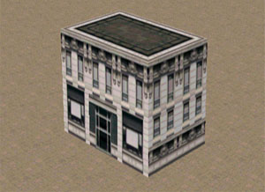
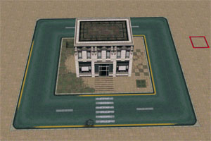
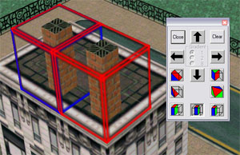

Редактор картПрежде чем начать, давайте скачаем сам
MapEditor от DMA Design. При первом запуске редактор предложит выбрать файл стиля. Как было упомянуто выше, есть три стандартных файла стиля: wil.sty, ste.sty, bil.sty. Давайте выберем
wil.sty, краски первого района. В левой части редактора появится панель с тайлами. Все тайлы белого цвета? Не расстраивайтесь, нажмите на любой из белых тайлов и он сразу проявится. Вероятно, этой проблемы нет лишь в версиях Windows ниже XP. Если никакой панели слева вообще нет – ее можно открыть в меню
View\Tile Selector. Давайте так-же включим другие необходимые панели -
View\Block и
View\Mode Tools.
Старайтесь обращаться с редактором очень бережно, как с доисторическим экспонатом в музее, и только тогда он будет вежлив с вами. Например, не включайте галку «Mark Unused Tiles», под списком тайлов, без открытого файла – за каждое необоснованное движение редактор летит к чертям. Под этой загадочной галочкой расположено увеличенное изображение текущего тайла, так сказать "кисть" и возможные с ней действия: поворот на 90 градусов, отражение слева направо или сверху вниз. Давайте создадим новую карту –
File\New, после чего зайдем в настройки редактора -
Tools\Settings.
StartupMap – что делать при запуске редактора: открывать последнюю карту, открывать новую или бездействовать.
Autosave – настройка таймера автоматического сохранения.
Buckups – максимальное количество файлов автоматического сохранения.
Background – цвет фона.
Style File – текущий файл стиля (в нашем случае GTA2\data\wil.sty).
Maps Directory – директория с картами по-умолчанию (в нашем случае GTA2\data).
Default TilesТайлы, применяемые к поверхностям блоков по-умолчанию. Например, при использовании шаблона Road, блоки, поверхностью которых является дорога, будут автоматически покрываться тайлом Road. Не смотря на то, что все блоки обычно перекрашивают вручную, давайте поставим что-нибудь приличное.
Wall – 412
Roof – 7
Road – 282
Pavement – 64
Field – 841
Water – 608
Light – 624
Default CollisionsНастройки проходимости тайлов по-умолчанию. По-умолчанию все тайлы имеют значение
«Wall+Bullet», что значит «Не пройти и не прострелить». У заборов и ограждений лучше ставить
«Wall», это добавит возможность пулям проходить сквозь них. У фонарных столбов –
«None», чтобы не было проблемы сбора столбов на автомобиле.
Итак, разберем управление камерой и выделение. Управлять камерой можно зажатием
правой кнопкой мыши. В сочетании с
Shift - можно отдалять и приближать камеру, в сочетании с
Ctrl - перемещать камеру горизонтально. Более простой способ перемещать камеру по карте -
стрелками на клавиатуре.
Выделять блоки можно левой кнопкой мыши, а так же комбинациями:
Ctrl+Arrow/Q/A – перемещение выделения.
Shift+Arrow/Q/A – плюс один строй блоков.
Ctrl+Shift+Arrow/Q/A – минус один строй.
Alt+Arrow/Q/A – вырезать и двигать.
Разобравшись с управлением, давайте попробуем создать островок с один зданием и окружной дорогой. При открытии новой карты, вся поверхность состоит из двух слоев. Самый нижний – это вода , выше на один уровень - слой Pavement.
Pavement - зона, где ходят пешеходы. помимо воды и пешеходной зоны, есть еще три типа поверхности:
Air – воздух,
Road – дорога,
Field – поверхность без пешеходов. На языке редактора, это виды блоков, но на практике, в игре, это виды поверхности лишь верхней части блока. Выделите блок 3x2x2, как показано на рисунке:
Это будет наше первое здание. Нажмите на кнопку с домиком, что расположена на панели сверху Эта кнопка покрасит выделенные блоки по используя шаблоны, которые мы установили в
Default Tiles. Сверху будут тайлы
Roof, по бокам – тайлы
Wall. Если вы еще не включили правую панель Block Info – пора это сделать –
View\Block Info или
Ctrl+B. Сверху вниз на ней расположены:
Мини-карта
Форма разреза блока, если таковая имеется
Разложение на тайлы
Тип блока
Направления движения авто по поверхности блока
Свойства выбранной грани блокаЧтобы можно было ходить по крыше и не проваливаться – смените тип верхних блоков на
Field. Текстура останется та же, т.к. дефолтными тайлами красятся только пустые грани. Кстати, при выборе типа
Air, в выделении удаляются все тайлы, можно сказать что это стирательная резинка. Нажмите клавишу
"2" и увидите карту в цветах, соответствующих типу поверхности. Серый –
Pavement, Зеленый –
Field, Синий – нижний слой воды, Черный –
Road, Желтый –
Flat-поверхность (частично прозрачный тайл, вроде фонаря, забора, вывески), Коричневый – либо стена, либо покрашенная Air-поверхность, сквозь которую игрок просто провалится. Удостоверьтесь в том, что вся крыша зеленого цвета, чтобы в ней не было провалов. Переключиться обратно в обычный режим можно нажав
"1". Существуют еще режимы, привязанные к клавишам
"3" и
"4", но их польза пока не раскрыта.
Итак, пора наш домик покрасить! Карандаш сверху или клавиша
"D" - инструмент нанесения тайлов. Выбираем тайлы слева и наносим на поверхность нашего будущего дома. Вот что может получиться:

Далее у нас по плану дорога вокруг дома. Выделяем блоки земли и меняем поверхность на тип Road. Примерно так должен выглядеть результат:
Не забываем покрасить в привычный вид:

Теперь можно задать движение транспорту. Перейдем во второй режим (
"2"). Зеленые и красные стрелки обозначают направление движения транспорта от блока к блоку. По-умолчанию выставляются не самые удачные направления движения. Например, на поворотах, машины будут съезжать с дороги на пешеходов:
Изменить направления можно в правой панельке –
Arrows.
Green означает как ездить можно, а
Red – как ни в коем случае нельзя. Исправьте недочеты с направлениями дороги, чтобы получить следующий результат:
Теперь превратим нашу карту в остров. Изменим территорию вокруг в
Air, чтобы осталась одна вода. Покрасим пустые бока набережной.
Займемся ограждениями: покрасим боковые поверхности тайлом ограждающего забора, как показано на рисунке:
Выберем у блоков забора покрашенный боковой тайл, в свойствах ставим галочку
Flat. О чудо – наши черные квадраты стали заборчиками. Далее в списке тайлов кликаем правой кнопкой по забору и ставим
Wall, для сквозь забор можно было стрелять.
Дополнительно следует рассказать о
Slope.
Slope – это изменение формы блока, для создания спусков, труб и других отличных от куба форм. Зайдите в
Slope на правой панельке. Цифра в центре – это количество блоков для спуска/подъема. Вы можете создать трубы для нашего здания, изменить форму крышы. А может, сделать спуск в воду и провести туда дорогу?

Укажем зону рестарта после смерти, открыв редактор зон в меню
Edit\Zones\Edit.
Размер зоны выставляем 1×1. Локация рестарта необходима для запуска карты. Аналогичным способом вы можете добавить зону рестарта после ареста. Некоторые зоны, под Windows XP и старше, вешают редактор. Для них можно использовать сторонние инструменты, например
ZoneEditor.
Сохраним нашу карту в сжатом формате, понятном для игры (
File\Save Compressed). Название будет
myfirstmap.gmp.